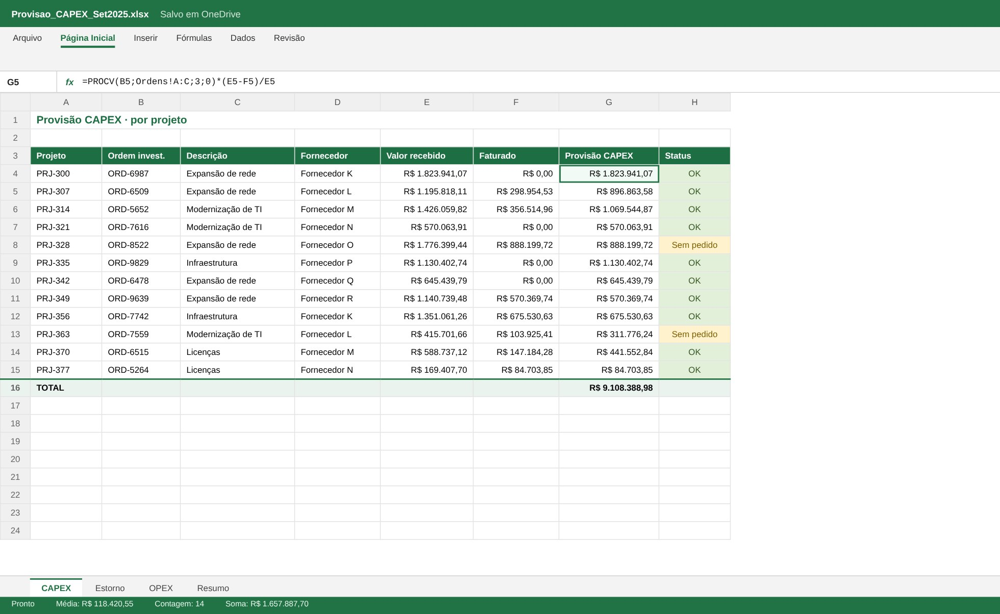

Lógica do negócio
Como funciona o processo
Pelo regime de competência, a despesa pertence ao mês em que o serviço foi prestado ou o bem foi recebido, mesmo sem nota fiscal. No fechamento, provisiona-se o que foi incorrido e não faturado. No mês seguinte, quando a nota chega, a provisão é estornada para não duplicar. OPEX vai para o resultado e CAPEX vai para o imobilizado em curso.
Regras que governam o processo
- Incorrido e sem nota fiscal: provisionar no mês
- Nota recebida no mês seguinte: estornar a provisão
- OPEX afeta o resultado, CAPEX afeta o imobilizado
- Itens sem pedido, centro de custo ou ordem de investimento vão para revisão
Como resolvi com dados
Extração
Pedidos, recebimentos e notas lançadas no período.
Cruzamento
Identifico o que foi recebido e ainda não faturado, por fornecedor e centro de custo.
Regras
Classifico em OPEX ou CAPEX por natureza, centro de custo e ordem de investimento.
Lançamento
Gero o lançamento de provisão e o estorno do mês seguinte.
Entrega
Planilha com fórmulas, comparação com o orçado e lista de itens a revisar.
Tecnologias utilizadas
Fontes de dados
Bancos e SQL
Processamento
Interface
Entrega
Automação
Funcionalidades
IA aplicada neste projeto
Casos com pedido sem recebimento, faturamento parcial e estorno no mês seguinte.

Miguel Vinicius Moura Martins
Defini a regra de negócio, modelei os dados, validei os números contra o processo manual e desenvolvi a ferramenta com apoio de IA.